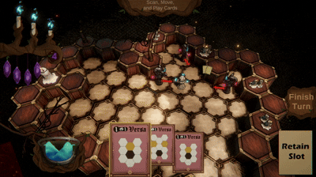
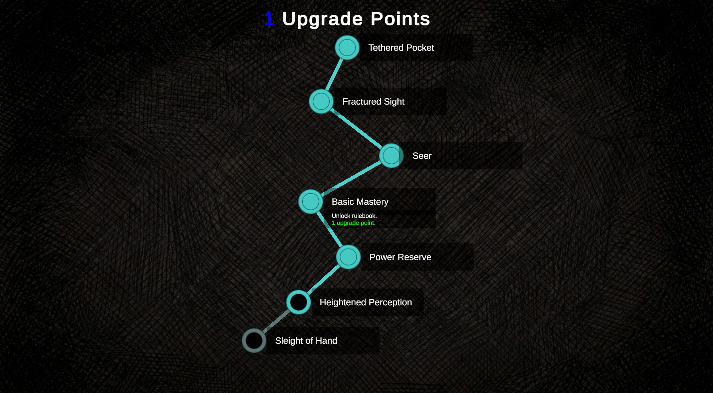
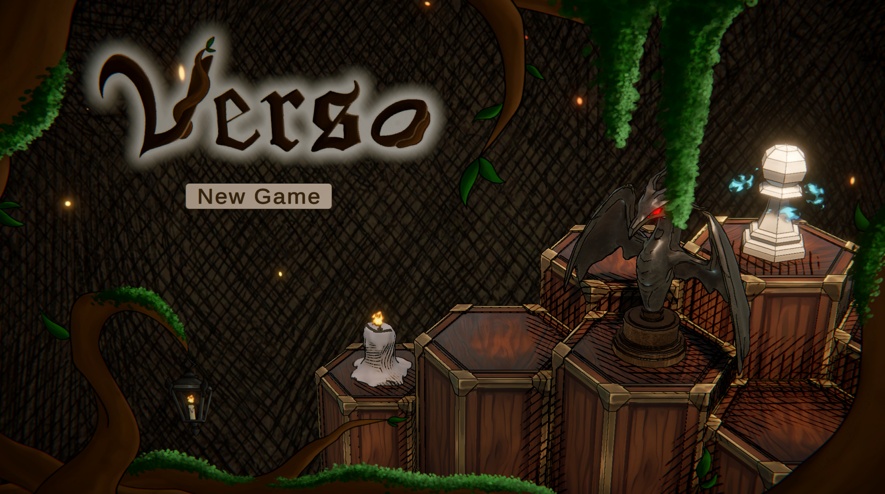

Verso
A rogue-like deck-building card-battler taking place on a hexagonal game board.
Tech: Unity (C#), data-driven development, procedural generation
Highlights



Team: 5 students (2 engineers, 2 artists, 1 designer)
Role: Head Engineer
Since this project had to be finished within a single semester, my goal was to create clean, scalable systems that could easily be built upon if project development continued in the future. Over the course of the semester, my development was mainly focused on board generation, card functionality, enemy behavior, and level selection.
The most common piece of feedback from playtesting involved unfairness: enemies would sometimes spawn too close to the player and wipe them out in one turn. I could have solved this problem by enforcing a minimum distance between the player and enemies at the start of a round, but that would have introduced another issue: boredom on the first turn. Instead, I implemented a "danger" value that scales inversely with the distance of enemies from the player. With this system, different enemies could have different danger values and each level could enforce a unique maximum danger value.
Takeaway: Developing systems that are easy to interact with from a non-technical perspective takes coordinated iteration and clean documentation.